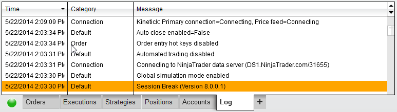
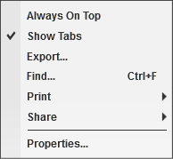
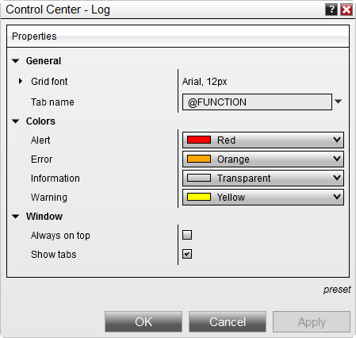

|
<< Click to Display Table of Contents >> Log Tab |


|
Log Tab
|
<< Click to Display Table of Contents >> Log Tab |
|
The Log tab displays historical application and trading events for the current day in a data grid.
Log DisplayLog events are categorized and color coded based on four distinct alert levels; Information, Warning, Error and Alert.

Each log event is displayed by date, category and message. In some cases, the length of the message may be larger than the width of the "Message" column. In this situation, you can hover your mouse above the message in order to have it display in a pop-up type window.
Right Click MenuRight mouse clicking within the log display section opens the following menu:

|

Log Tab Properties
How to preset property defaultsOnce you have your properties set to your preference, you can left mouse click on the "preset" text located in the bottom right of the properties dialog. Selecting the option "save" will save these settings as the default settings used every time you open a new window/tab.
If you change your settings and later wish to go back to the original factory settings, you can left mouse click on the preset text and select the option to restore to return to the original factory settings - please note though that you cannot save a custom default to restore to.
|